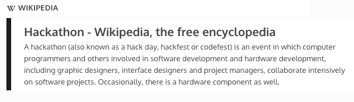

The most common question I get when talking about tech projects is:
"What’s a Hackathon?"
The definition according to Wikipedia:
Hackathons have been around for a very long time, but I think it can be better stated as an event focused on creative problem solving.
My first Hackathon I went to was in the summer of 2012 and was hosted by GoInstant. Around that time I had been hearing a lot of buzz around Hackathons but never knew what it was. Once I figured out what it was, I remember thinking that I shouldn't even attend because I didn’t think I could add anything to a team. I thought I would at least give it a shot and said, hey, why not?
Hackathons can range from different lengths of time. Different themes (such as software, or solving a companies problem). Different locations. Different team sizes. It could even range between being a casual event, or being very competitive. My first Hackathon was a specialized event, so it wasn't very intense and was a good introduction to how these events are organized and how they go.
At the time, we had been interested in the way we code, so our idea was to develop a way so two or more people could develop in real-time. Since I did not have a lot of experience back-end development, I focused more on the applicable use of the idea and worked alongside others on the front-end (more so the design). Sometimes you might even walk into event thinking you’ll work on one idea, or by doing one task, and that could all change depending on the needs of the team.
Believe it or not, you are a special breed. At many events, designers are in short quantities and are always in demand. If design is your background, you are a great fit to any team.
Coming up with ideas can be difficult. I mean very difficult.
Sometimes referred to as the business person, the idea person well, comes up with an idea! Depending on the type of event, there might even be a time to pitch ideas to everyone. This is usually the first day of the event, and you get up and talk about a project you want to work on, and need some other people to work on. Anyone can have an idea, but sometimes you might have an idea, but also want to learn from others on how to create it. Bonus: if you are good at project management, this is a plus, especially if the team needs guidance.
With the right idea, attitude, and people, you can make a really cool application or product.
This is what most people think of when they think of an event based on development or computing science.
You’re not wrong, but there is so much more to it than just “coding". There are several forms of development: front-end, back-end, software, web, video game. People that specialize in data analytics, mathematics or more specialized science backgrounds might even be in attendance.
I’ve seen many amazing projects come out of teams with members of different backgrounds, and most of the time they end making the best projects because of the diversity of skills.
I know what you’re thinking, and yes: this position exists. To be fair, I think the largest benefit I had given to my first hack team was providing the coffee.
If you don’t have a specific skill that applies to a team, run and get some coffee for anyone that’s interested. They might be more willing to teach you a few things while they work on their project.
The best thing about a hackathon is what you learn and you get to meet new people. At the latest event I attended, a good friend of mine, Dave Culligan, also attended. While not having a huge background in computing science, he had gained value by just being there.
"I got to practice my sales pitching by pitching my app concept, I got to practice my code while developing our app, I improved my project management skills while working under strict time constraints, and I met some awesome people who have helped me out a lot in improving my blog and fixing bugs. I also got a sit-down with the Head of Recruiting for IBM Canada, which is outrageous.” - Dave Culligan
Whether you’re a seasoned veteran, or have never attended a Hackathon, you can always learn new skills, and it’s best to show up regardless of any feelings you have before you attend. If you only get one thing out of a Hackathon, you get to meet new people that can show you a thing or two.
If you’re looking for 10 quick success tips for you to follow while you’re at a hackathon, check this out!
Be sure to check out more about Hackathons here, and be sure to follow Dave’s wicked cool blog.
 ©2015. Mark Slaunwhite.
©2015. Mark Slaunwhite.